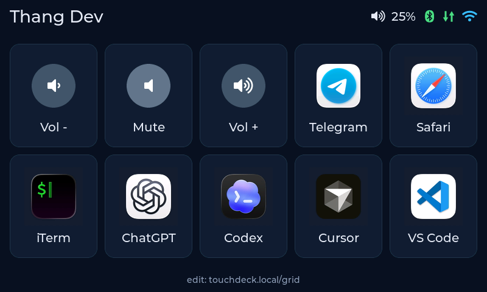
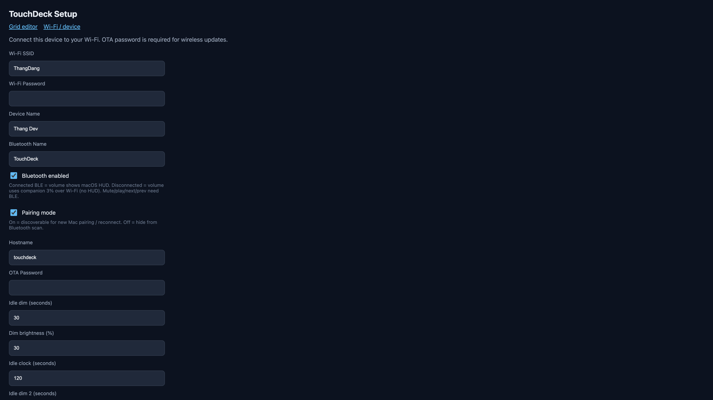
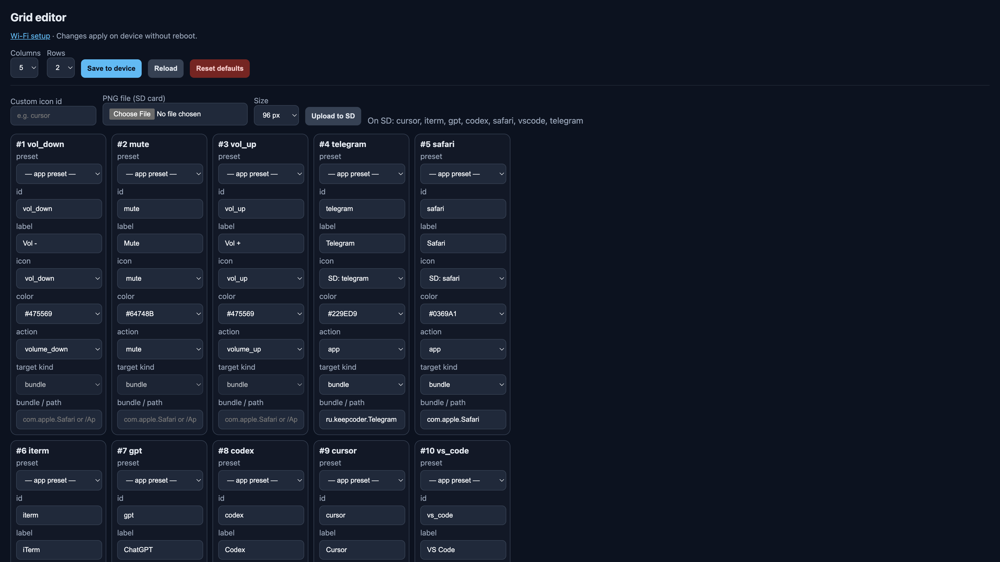
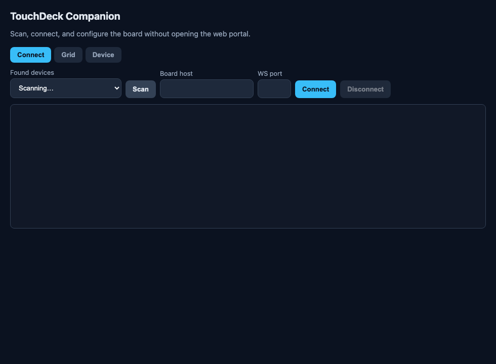

JC8048W550C · ESP32-S3
Bàn cảm ứng desk cho macOS
Mở app, chỉnh volume/media, nhận cảnh báo duyệt Cursor/Codex — cấu hình qua Companion hoặc web portal.

Hệ thống gồm gì?
LCD 800×480 + GT911, UI LVGL, BLE HID media, Wi‑Fi portal, WebSocket, OTA.
Nhận nhấn tile → mở app; đồng bộ volume; đẩy thông báo approve Cursor/Codex.
Wi‑Fi, Bluetooth, idle/đồng hồ; sửa lưới nút tại touchdeck.local/grid.
Hai đường kết nối
| Kênh | Dùng cho |
|---|---|
| Bluetooth (BLE HID) | Volume (có HUD macOS), mute / play / next / prev |
| Wi‑Fi (WebSocket :81) | Mở app qua Companion, sync volume %, approval alerts |
Màn hình trên desk
Lưới tuỳ chỉnh (ví dụ 5×2). Thanh trạng thái góc phải:
| Icon | Ý nghĩa |
|---|---|
| Volume % | Mức loa Mac (Companion đẩy qua WS) |
| Bluetooth | Xanh = đã ghép HID |
| ⇅ | Xanh = Companion đã nối — nút mở app mới bật |
| Wi‑Fi | Xanh = STA; vàng = đang AP setup |
Chạm tile app để mở; Vol ± / Mute gửi HID khi đã ghép Bluetooth.
Hướng dẫn sử dụng
1. Flash firmware lần đầu
- Cáp USB‑C có data + trình duyệt Chrome hoặc Edge.
- Mở trang Cài firmware → Kết nối USB → Ghi firmware (nên xoá flash lần đầu).
- Board phát AP
TouchDeck-Setup-XXXX(mật khẩutouchdeck) nếu chưa có Wi‑Fi.
2. Cấu hình Wi‑Fi
- Vào AP hoặc mở
http://192.168.4.1/ sau đóhttp://touchdeck.local - Nhập SSID, mật khẩu, tên thiết bị, hostname, mật khẩu OTA → Save & Restart


3. Bluetooth (media)
- Bật Bluetooth + Pairing mode trên portal
- Mac → System Settings → Bluetooth → ghép TouchDeck
- Volume Up/Down khi đã ghép hiện HUD hệ thống
4. Companion trên Mac
Tải bản đóng gói rồi mở — không cần Node/pnpm:
- Mở file
.dmg→ kéo TouchDeck Companion.app vào Applications. - Chạy app (hiện trên menu bar). Lần đầu nếu macOS chặn: chuột phải → Open.
- Tab Connect → Scan / nhập
touchdeck.localport81→ Connect. - Accessibility: bật TouchDeck Companion (cho cảnh báo Cursor/Codex).

5. Dùng hàng ngày
- Mở app — chạm tile App (cần Companion WS; tile mờ nếu chưa nối)
- Volume — BLE = HUD macOS; không BLE = bước 3% qua Companion
- Mute / play / next / prev — cần BLE; không có thì tile disabled
- Idle — dim → đồng hồ → dim 2 → tắt; chạm wake không kích hoạt nút (nhấc tay rồi chạm lại)
Tuỳ chỉnh lưới
Mở http://touchdeck.local/grid hoặc Companion → tab Grid: đổi cột/hàng, label, icon SD, action (volume / app + bundle ID) → Save to device.
Xử lý sự cố nhanh
| Hiện tượng | Kiểm tra |
|---|---|
| Nút app mờ | Companion đã Connect? Icon ⇅ xanh? |
| Media không chạy | BLE đã ghép? |
| Volume Wi‑Fi không có HUD | Đúng hành vi — bật BLE để có HUD |
| Portal không mở | Thử IP LAN hoặc vào lại AP setup |
| Flash lỗi | Chrome/Edge, cáp data, đúng cổng ESP32‑S3 |
Sẵn sàng flash board?
Trình cài đặt Web Serial tải firmware từ GitHub Releases — không cần PlatformIO trên máy.